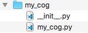

Cog Manager UI
This is the cog guide for the core cog. You will find detailed docs about usage and commands.
[p] is considered as your prefix.
Note
This cog is not like the other cogs. It is loaded by default, not included in the cogs paths and it cannot be unloaded. It contains needed commands for cog management.
Usage
This cog allows you to manage your cogs and where you can install them. Unlike
V2, which had a cogs folder where everything was installed, you can
install V3 cogs everywhere, and also make them cross-compatible with other
instances!
If you want to install your cogs using a Github repo (usually what you will always be looking for), you need to use the downloader cog. However, if you have the files of a cog or want to code one, this cog is what you should be looking for.
The most basic command is paths, which will list you all of the currently set paths.
You can add a path by using the addpath command. All cogs in that path will be available for the bot and listed in the cogs. You can then load or unload them.
How to install a local package without using downloader
Let’s suppose you made a cog request on the cog board and now you want to add your own cog to Red. You should have a folder that looks like this:
You will first need to add a cog path to your instance. For that, use the addpath command with a new directory.
Create a folder somewhere (should stay accessible) and copy its path. A path looks like this:
Windows:
C:\Users\username\Documents\MyCogsmacOS:
/Users/username/Documents/MyCogsLinux:
/home/username/Documents/MyCogs
You can now use the command we talked about before: type [p]addpath
<your_path>.
Attention
A path shouldn’t have spaces in it. If it does, add quotation marks around the path, or a backslash before the space.
In that MyCogs folder, you can drop your cog folder. You should now have
something that looks like this:
Now if you type [p]cogs, your new cog should be listed, and you will be
able to load it!
Commands
Note
The whole cog is locked to the bot owner. If you are not the owner of the instance, you can ignore this.
cogs
Syntax
[p]cogs
Description
Returns a list of loaded and unloaded cogs on the bot.
Cogs are unloaded by default. This is where you can find your cogs if you installed some recently.
All of the cogs located inside a cog path will be listed here. You can see a list of the paths with the paths command.
paths
Syntax
[p]paths
Description
Lists the registered cog paths, with the install path for the downloader and the core path for the core cogs.
You can use the reorderpath command to reorder the listed paths.
Tip
The number before a cog path can be used for the removepath command.
addpath
Syntax
[p]addpath <path>
Description
Adds a path to the list of available cog paths. This means that all valid cogs under the path will be added to the list of available cogs, listed in cogs.
Arguments
<path>: A path that should look like this and point to a folder:Windows:
C:\Users\username\Documents\MyCogsmacOS:
/Users/username/Documents/MyCogsLinux:
/home/username/Documents/MyCogs
Try to avoid paths with spaces. If there are spaces, add a backslash before the space on Linux. Add quotation marks around the path if needed.
removepath
Syntax
[p]removepath <path_numbers...>
Description
Removes one or more paths from the list of available paths. Its cogs won’t be accessible anymore.
Arguments
<path_numbers>: The number of the path(s) to remove. You can get it with the paths command.
reorderpath
Syntax
[p]reorderpath <from> <to>
Description
Reorders the paths listed with the paths command. The goal of this command is to allow the discovery of different cogs. If there are multiple packages with the same names, the one that is inside the highest folder in the list will be kept and the other ones will be ignored.
For example, let’s suppose this is the output of paths:
/usr/local/lib/python3.7/site-packages/starbot/cogs
/home/laggron/custom_cogs
/mnt/not_suspicious_usb_drive/not_suspicious_cogs
The folders 2 and 3 both have a package named leveler while being different
cogs, and you want to load the one located in the 3rd folder. To do that, you
have to put the 3rd path higher than the 2nd path, let’s swap them! Type
[p]reorderpath 2 3 and the output of
paths will then be the following:
/usr/local/lib/python3.7/site-packages/starbot/cogs
/mnt/not_suspicious_usb_drive/not_suspicious_cogs
/home/laggron/custom_cogs
Arguments
<from>: The index of the path you want to move.<to>: The location where you want to insert the path.
installpath
Syntax
[p]installpath [path]
Description
Shows the install path, or sets a new one.
If you want to set a new path, the same rules as for addpath apply
Warning
If you edit the install path, the cogs won’t be transferred.
Arguments
[path]: The absolute path to set. If omitted, the current path will be returned instead.